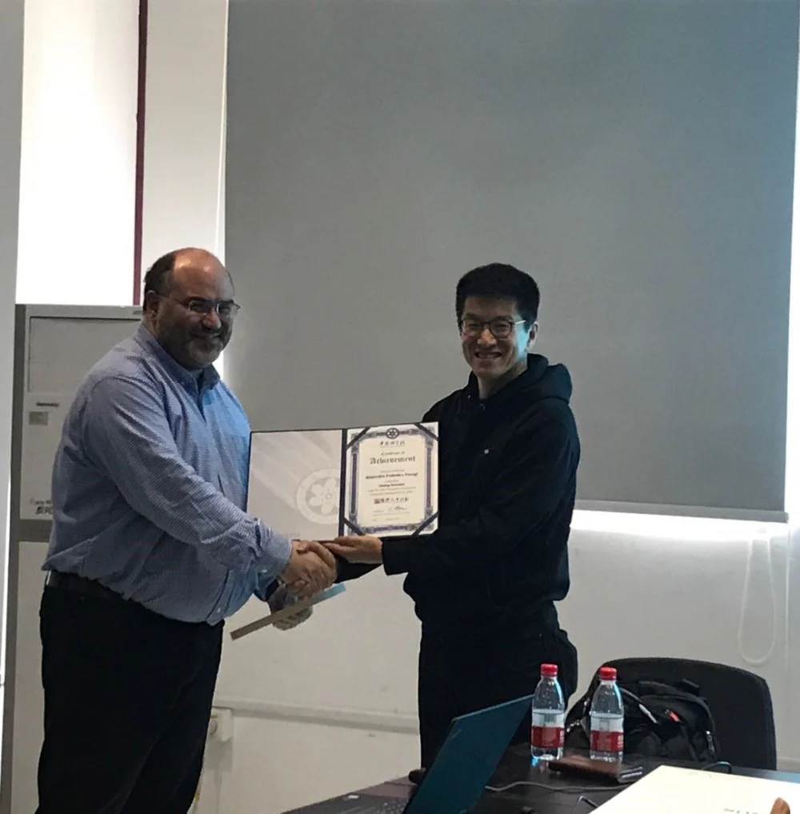
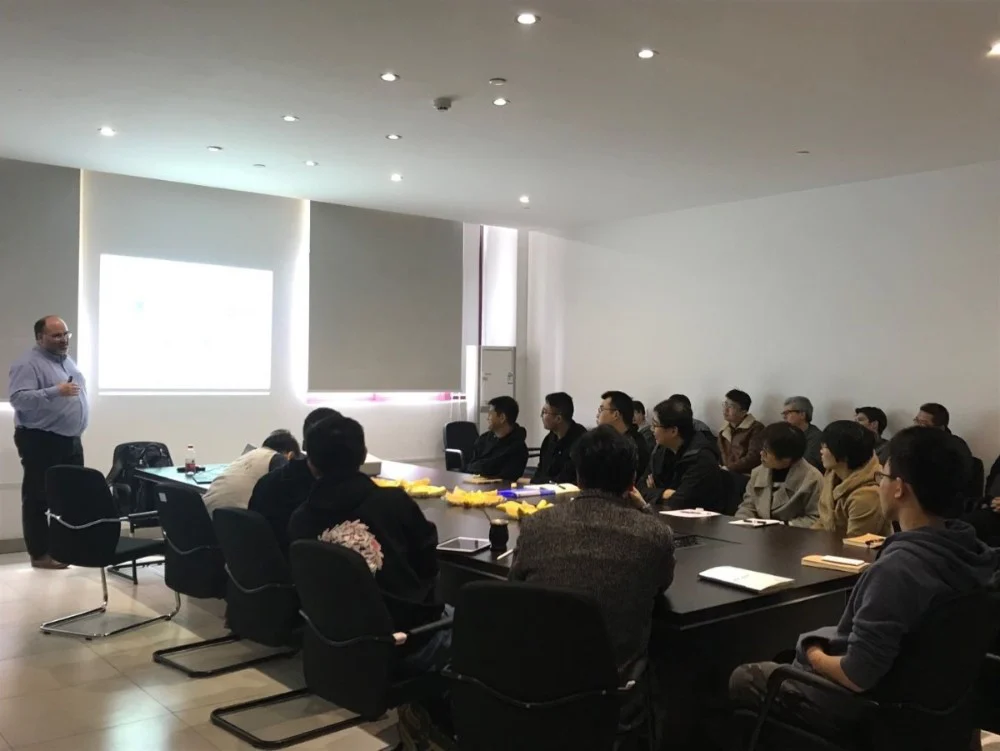

2019年4月2日是Alejandro F. Frangi教授作为国际访问学者加入iMED的第一天，Frangi教授表示对在iMED的工作充满期待。刘江代表iMED团队对Frangi教授的加入表示热烈的欢迎，并期待未来能够促成中英团队更深入的合作。
目前，生物医学数据的多维和多模态获取方面的技术进步不仅使个人健康状况的详细调查成为可能，还有助于改善患者的诊断和治疗结果。然而，丰富的生物医学信息较难直接转化为医疗保健信息。当前的信息洪流，迫切需要更全面的方法来有效地分析和吸收患者的医疗数据。
针对以上问题，首先，Frangi教授提出虚拟生理人的概念，该概念是基于上述个性化和精准的海量医疗信息采集，开发框架和工具，最终使这种综合的人体研究和个性化和预测医学的呈现方法成为可能。其次，Frangi教授从集成生物医学成像和传感、信号和图像计算和计算生理学领域，和在具体工作中如何利用原则来解决特定临床心血管领域的具体问题。该研究方向使个性化、预测和综合医疗保健到来成为可能。然后，Frangi教授强调了模型验证是转化成功的关键，以及此类验证如何从特定建模组件的技术验证跨越到对所提议的工具有效性的临床评估。最后，会议总结了VPH领域目前研究工作的不足之处，以及未来几年该领域技术可能性。
Frangi教授是英国利兹大学生物医学图像计算和仿真技术中心教授和主任，也是IEEE,EAMBES等知名国际学术组织的fellow（会士），IEEE ISBI出版主席（2006），MICCAI国际医学图像与介入会议主席（2018），并兼任MICCAI主任委员会成员，IEEE TMI 副主编，MIA副主编，SIAM副主编等。目前， 他在相关研究领域的主要国际期刊上发表论文200多篇，H指数为53，引用数量超过19200次，单篇最高引用次数3700余次，并入选了Thomson 的高被引学者。Frangi教授分别在帝国理工学院，飞利浦集团，谢菲尔德大学和利兹大学从事生物医学图像研究工作，作为主要负责人主持科研项目20余项，累计科研经费超过1600万英镑（1.5亿人民币）。其主要研究方向是医学影像分析，机器学习以及模式识别。目前已经有多项研究成果在工业界转移转化。

